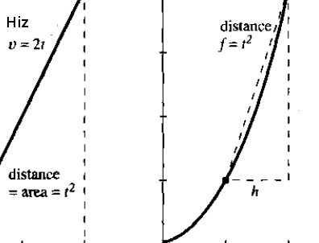
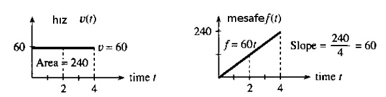
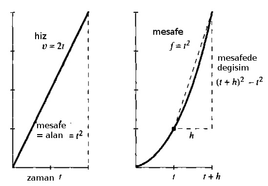
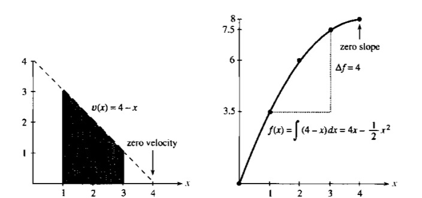
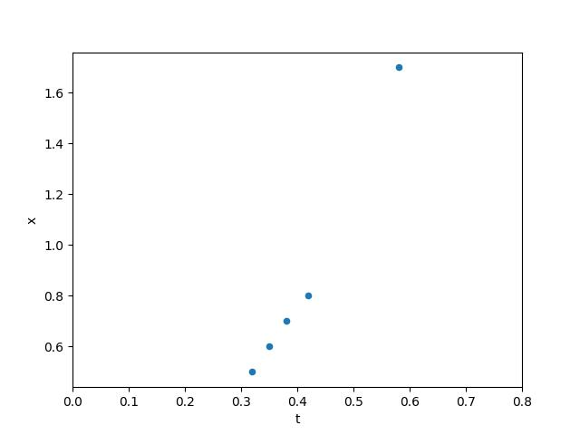
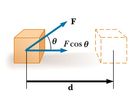
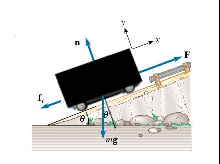
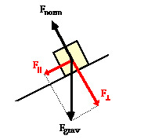

Temel Fizik 1, İvme, Hız, Yerçekimi
Calculus'un gerçek dünyada belki de en iyi örneği bir arabanın hız göstergesi ve kilometre sayacı arasındaki ilişkidedir. Bu iki aletin ölçümlerini birbirinden bağımsız aldığını düşünelim, mesela araba tekerleğine (ya da onu döndüren her neyse) direk bağlı bir şekilde katedilen gerçek mesafeyi ve hızı ölçebiliyorlar. Soru şu: bu ölçümlerden biri elimizde olmasa, bir ölçümü diğerine bakarak hesaplayabilir miydik? Mesela arabanın hızı (velocity) $v$'nin $t_0,t_1$ arasındaki her zaman noktasındaki kaydı elimizde olsa, bu aralıkta katedilen mesafe (distance) $f$'yi hesaplayabilir miydik? Ya da mesafe bilinseydi o zaman hızı bulabilir miydik?
Calculus bu geçişi sağlayabilir. $f$'den $v$'ye gidiş türev ile, $v$'den $f$'ye gidiş entegral ile [1, sf. 1].

İlkokulda öğretilen fizik aslında Calculus ile yapılan hesabın genelleştirilmiş hali. Orada öğrencilere öğretilen problemlerde hız çoğunlukla sabit oluyor, mesela $v = 60 m/h$ (mil / saat). 2 saat gidildikten sonra katedilen mesafe 120 mil. Bu hesabın bir çarpım olduğunu biliyoruz, bu çarpım aslında altta soldaki figürdeki alana (area) tekabül ediyor. Aynı şekilde eğer sürekli mesafeyi ölçüyor olsaydık, alt sağdaki ölçümlerdeki gibi mesela, bu grafikten geriye hıza geçmek demek bir bölüm gerektirir, ve bölüm aslında bir eğim (slope) hesabıdır.

Calculus'un değeri $v,f$ sabit olmadığı zaman ortaya çıkıyor. O zaman basit çarpım ve bölüm yeterli değil. Mesela ya mesafe $f$ artık bir fonksiyon $f=t^2$ ile temsil ediliyor olsaydı? O zaman hızı elde etmek için bir türev almak gerekir, bölüm yetmez, ki türevin sonucu da hala $t$ ve diğer başka değişkenlere bağlı bir başka fonksiyon olabilir.

Üstteki örnekte türev $2t$. Bu tek bir sayı değil, her $t$ noktasında farklı değer veren bir fonksiyon. Entegral aynı şekilde, gerçi üstteki örnekte hala üçgen alan hesabı kolay olabilir, ama çok daha çetrefil bir hız fonksiyonu olduğunu düşünelim, mesela $v(x) = 4 - x$ ($t$ yerine $x$ kullandık şimdi), ya da $v(x) = x^2 + \cos(x)$. Buradaki alan hesabı için bir entegral gerekir. Entegralleri toplam değil çarpım olarak görmek hakkında bir yazı için [7]. Eğer elimizde analitik fonksiyon değil pür sayı değerleri olsaydı, bu sefer sayısal türev ya da entegral almamız gerekirdi, ki bunun tekniklerini ileride göreceğiz.
Özetlemek gerekirse hız $v(t) = \frac{df}{dt}$, ve mesafe $f(t) = \int v(t)\mathrm{d} t$.

Üstteki örnekte $v(x) = 4 - x$ hızını görüyoruz. Entegral
$$ \int v(x) \mathrm{d} x = 4x - \frac{1}{2}x^2 + C $$
$C$ sabiti grafikte atlanmış. Bu sabit orada çünkü $C$ için hangi sayı olursa olsun türev alırken yokolur, yani $C=1,2,3..$ ile hep aynı türevi elde ederiz. Bu sebeple o sabiti problemden başka şekillerde elde etmemiz gerekir. Alan hesabının kendisi için bu fark etmez, çünkü alan hesabında çıkartma yaparken $C$'ler iptal olur,
$$ \int_{x=1}^{x=3} v(x) \mathrm{d} x = f(3) - f(1) = (7 \frac{1}{2} + C) - (3 \frac{1}{2} + C) = 4 $$
İvme
Hız mesafedeki değişim ise mesafedeki değişimin değişimi, yani hızın değişimine ivme adı verilir. İvme için türevin türevi gerekiyor, yani
$$ \frac{d^2f}{dt^2} = \frac{d}{dt} \frac{df}{dt} $$
Yerçekimi
Peki hız, ivme gibi kavramlar nereden geliyor? Burada İsaac Newton'a şapka çıkartmak lazım. Şimdi aklımıza $F = ma$ Newton kanunu geliyor, yani kütle üzerinde uygulanan kuvvet, kütle ve ivmenin çarpımına eşittir. Fakat Newton aslında direk $F=ma$ formülü keşfetmedi. Bu formül keşfettiği diğer başka bir kavramın özel halidir. Newton'un 2. Kanunu şöyle der "bir cismin momentumunun değişim oranı (bir zaman anında) o cisme uygulanan kuvvete doğru orantılıdır". Momentum nedir? Fizikte her terimin spesifik bir tanımı var. Momentum hız demek değildir. Eğer ağır bir objeyi itersem bu obje yavaş ilerler, hafif bir objeyi aynı kuvvetle itersem daha hızlı ilerler, ama momentum iki durumda da aynıdır. Momentum kütle ve hızın çarpımıdır. Ayrıca Newton momentumdaki değişimden bahsetmiştir, yani başlangıç formülü şudur:
$$ F = \frac{d}{dt} (mv)$$
Sabit $m$ için
$$ F = m \frac{dv}{dt} = ma$$
Çünkü hızın türevi ivmedir. İşte şimdi ünlü formüle eriştik.
Üstteki formülü vektörel formda da belirtmek mümkündür, mesela $m$ kütlesine uygulanan kuvvet üç boyutlu olabilir, $\vec{F} = [\begin{array}{ccc} F_x & F_y & F_z \end{array}]$ gibi, aynı şekilde $\vec{a}$ bir vektör olabilir, o zaman
$$ \vec{F} = m \vec{a} $$
deriz, ya da notasyon bazen vektörel değişkenleri koyu gösterilebilir,
$$ \mathbf{F} = m \mathbf{a} $$
Bu arada kütle $m$ sabittir dedik, fakat bazen böyle olmayabilir de.. Mesela bir roket uçarken yakıt kullanır, ve o yakıt kullanılıp azaldıkça roketin kütlesi de değişir. O zaman roket hakkında hesap yapan fizikçiler üstteki türevdeki $m$'i sabit alamaz.
Sonuçta Newton bilimcilere ivme ile kuvvet arasında bir ilişki sunmuş oldu. Nerede bir hızlanma varsa orada bir kuvvet vardır diyordu bize, dinamik alanına girecek kendinden sonraki bilimcilere kuvveti bulun ve onu yaratan şeyi modellemeye uğraşın diye bir tavsiye veriyordu. İlk örnekleri Newton'un kendisi verdi, mesela yerçekim kuvvetini açıkladı, onun için spesifik bir formül ortaya attı. Bu ünlü Uzaklığın Karesinin Tersi (Inverse Square Law) kanunu.
Uzayda iki kütle düşünelim, iki gezegen mesela, arasında $r$ uzaklığı olan bu iki obje arasındaki çekim kuvveti
$$ F = G \frac{m_1m_2}{r^2}$$
$G$ evrensel bir sabit, dikkat bu bizim dünyamızın yerçekim sabiti küçük $g$ değildir, ki bilindiği gibi o değer 9.807.. diye giden bir sabit.
Soru
Dünyanın yerçekim sabiti $g$ nasıl hesaplanır?
Cevap
Bir deney yapmamız lazım, mesela bir belli yüksekliklerden bir top atıp ne kadar zamanda yere düştüğünü saniye olarak kaydedebiliriz. O zaman bize mesafeyi zamana bağlayan ve onu $g$ ile ilişkilendiren bir formül lazım. Önce $g$ formülü.
Kütleler arasındaki uzaklık kütlelerin merkezine göre hesaplanır, yani tüm çekim kuvvetinin her iki objenin tam merkezinden geldiği kabul edilir. O zaman, ve eğer iki obje mesela dünya ve onun üzerinde duran bir bir cisim ise, bu cismin dünya çapına göre "uzaklığı" yaklaşık olarak yine dünya çapının kendisidir.
Eğer $m = m_1$, ki $m_1$ ufak olan obje, $m_2$ dünya, ve $r$ dünya çapı dersek, ve şöyle bir gruplama sonrası [2, sf. 9-6], $g = Gm_2 / r^2$,
$$ F = m g$$
elde ederiz. Bu gruplama yapılabildi çünkü grubun içindeki tüm değerler bilinen sabit değerler. Bu arada bilinen $g$ değerinden geriye giderek $G$'yi de hesaplayabiliriz, birazdan göreceğiz.
Devam edelim, mesafe / zaman formülü için, üstteki formülü ve ivme diferansiyel denklemi ile beraber düşünürsek,
$$ mg = m(\frac{d^2x}{dt^2})$$
Değil mi? Eşitliğin her iki tarafı da kuvvet, sağ tarafta alınan mesafenin ikinci türevi var, ki bu ivmedir. $m$'ler iptal olur, ve bir kez entegral alınca
$$ v(t) = v_0 + gt$$
Bir kez daha
$$ x(t) = x_0 + v_0t + \frac{1}{2}gt^2 \qquad (1) $$
$x_0,v_0$ sabitler, ama deneyimizde başlangıç hızı $v_0=0$ alacağız, ayrıca başlangıç mesafesi de $x_0=0$, geriye kalanlar,
$$ x = \frac{1}{2}gt^2$$
Güzel. Şimdi elimizdeki ölçümler hangi mesafeden top atıldığı $x$, ve düşüşün kadar zaman aldığı $t$. Mesafe metre, zaman saniye olarak.
Ölçümler gerçek bir deneyden alınmıştır.
import pandas as pd
from StringIO import StringIO
s = """t;x
0.32;0.5
0.35;0.6
0.38;0.7
0.42;0.8
0.58;1.7
"""
df = pd.read_csv(StringIO(s),sep=';')
df.plot(x='t',y='x',kind='scatter')
plt.xlim(0,0.80)
plt.savefig('phy_005_basics_01_05.jpg')

$g$ hesabına gelelim: Üstteki formüle göre $x$ ile $1/2 t^2$ arasında lineer bir ilişki var. Bu ilişki $g$'nin ta kendisi! O zaman bahsedilen değerler arasında lineer regresyon kullanırsak $g$'yi bulabiliriz!
import statsmodels.formula.api as smf
df['t2'] = 1/2. * df.t**2
results = smf.ols('x ~ 0 + t2', data=df).fit()
print results.params['t2']
9.84948009784
Ünlü $g$'yi yaklaşık olarak bulduk.
Büyük $G$
$g = Gm_2 / r^2$ ise $G = g r^2 / m_2$ demektir, ki $m_2$ dünyanın kütlesi, $r$ ise dünyanın yarıçapı. Yaklaşık bilinen değerleri kullanırsak,
m2 = 5.972e24 # kg
r = 6371000 # metre
g = 9.8
G = g*r**2 / m2
print (G)
6.660724745478902e-11
Fena değil! Gerçek değer 6.67408 $10^{-11}$ $m^3$ $kg^{-1}$ $s^{-2}$. Eğer fi tarihinde bir bilimci mesela bu konuda çalışıyorsa $G$ ona gezegenler arası güçleri hesaplamak için gerekli olurdu, dünyanın kütlesini dünyanın çapından yola çıkarak kabaca bulabilirdi, ve böylece bir evrensel çekim sabitine erişebilirdi. Newton hakikaten de bunu yaptı, dünyanın yoğunluğuna (ki oradan kütle bulunabilir) kestirme bir hesapla "suyun 5 ya da 6 katıdır" dedi, gerçek değer 5.515'e oldukca yaklaşmıştı.
İş (Work)
İş, günlük terminolojideki iş kavramından farklı. Bir sandalyeyi kaldırıp birkaç dakika tutsam çok iş yapmış gibi gelebilir bana [1, sf. 184], ama aslında fiziki iş tanımı açısından hiç iş yapmadım. Fizikteki iş bir objeyi bir yönde hareket ettiren güç çarpı o objenin aynı yöndeki katettiği mesafe $d$. Eğer kuvvet vektörü tam o yönde değilse o yöne tekabül eden bileşenine bakılır, $W = F d \cos\theta$.

İş bir enerji transferidir. Eğer uygulanan kuvvet işin yönü ile aynı ise işaret pozitiftir. Eğer tersi ise işaret negatiftir. Bir objeyi kaldırırıp bir seviyeye getirirsem kaldırma kuvveti kaldırma yönünde, işin işareti pozitif. Ama o obje üzerindeki yerçekimsel kuvvetin yaptığı iş negatif, çünkü harekete ters yönde.
Türetmek için (1) ile başlayalım, $g$ yerine genel bir ivme $a$ alalım, ve biraz düzenleyince,
$$ x - x_0 = v_0 t + \frac{1}{2} a t^2 $$
Bir diğer formül
$$ v = v_0 + a t $$
Bu iki formülü birleştirerek $t$'yi yokedebiliriz [3, sf. 24],
$$ t = \frac{v-v_0}{a} $$
$$ x - x_0 = v_0 \left(\frac{v-v_0}{a}\right) + \frac{1}{2} \left(\frac{v-v_0}{a}\right)^2 $$
$$ = v_0 \left(\frac{v-v_0}{a}\right) + \frac{1}{2} \frac{(v-v_0)^2}{a} $$
$$ 2a (x-x_0) = 2 v_0 (v-v_0) + (v-v_0)^2 $$
$$ = 2 v_0 v - 2 v_0^2 + v^2 - 2 v v_0 + v_0^2 $$
$$ 2a (x-x_0) = v^2 - v_0^2 $$
$$
v^2 = v_0^2 + 2a (x-x_0)
\qquad (2)
$$
Şimdi kinetik enerjiden başlayarak iş formülünü türetelim. Mesela bir ipteki boncuğa kuvvet uyguladık, boncuk $x$ yönünde $d$ kadar kaydı.
$$ F_x = m a_x \qquad (3) $$
Kuvvet sabit ise o zaman ivme de sabittir, o zaman (2) formülünü kullanabiliriz.
$$ v^2 = v_0^2 + 2 a_x d $$
Eğer $a_x$ için çözersek [3, sf. 152],
$$ a_x = \frac{v^2 - v_0^2 }{2 d} $$
Bu formülü (3)'e sokalım,
$$ F_x = m \left( \frac{v^2 - v_0^2 }{2d} \right) $$
$$ F_x d = \frac{1}{2} m v^2 - \frac{1}{2} m v_0^2 $$
Yani yapılan iş ile objeye (boncuğa) enerji transfer edilmiştir. Başlangıçtaki kinetik enerji $\frac{1}{2} m v_0^2$ yapılan iş ile $\frac{1}{2} m v^2$ olmuş. Aradaki fark $F_x d$ ile hesaplanıyor, ki bu çoğunlukla $W$ ile tanımlanan iş.
Güç (Power)
Bir zaman aralığında yapılan ise güç adı verilir. Mesela $\Delta t$ zaman aralığında bir objeye kuvvet uyguladık ve bir iş yapıldı, bu süre içinde uygulanan güç
$$ P = \frac{W}{\Delta t} $$
ile gösterilir. Nesne üzerinde yapılan iş onun enerjisinin arttırır, bu sebeple gücün daha genel tanımı enerji transfer oranıdır. Bir $t$ anında, o anlık gücü üstte gösterilen ortalama güç hesabının limite giden formu olarak gösterebiliriz [8, sf. 200],
$$ P \equiv \lim_{\Delta t \to 0} \frac{W}{\Delta t} = \frac{\mathrm{d} W}{\mathrm{d} t} $$
Eğer uygulanan gücün yol açtığı yer değişimini sonsuz küçük $\mathrm{d} s$ ile belirtsek, $\mathrm{d} W = F \cdot \mathrm{d} s$ diyebilirdik o zaman üstteki formül
$$ P = \frac{\mathrm{d} W}{\mathrm{d} t} = F \cdot \frac{\mathrm{d} s}{\mathrm{d} t} = F \cdot v $$
ki burada $v = \mathrm{d} s / \mathrm{d} t$ eşitliğini kullandık. Yani elimizde kuvvet ve hız var ise, yer değişimine bakmadan gücü direk bu iki öğeden bulabiliriz, çünkü hız zaten birim zamandaki yer değişimini temsil ediyor.
Örnek
Arabaların motor gücünden çok bahsedilir, ki o baglamda beygir gücü (horsepower -HP-) kelimesi çok duyulur. Bunun tarihi sebepleri var ama hp birimi rahatça Watt birimine çevirilebilir, 1 HP = 745.69 Watt.
Bir soru soruldu, mobil küçük ev (tiny house) modası var, acaba bu tür bir evi hareket ettirmek için ne kadar kuvvet gerekir? Bu evler olabildiğince küçük oluyor, boyutlar uzunluk 6 metre, genişlik 2.5 metre, yükseklik 3 metre, bir kutu düşünelim. Ağırlığı 3 ton olsun. Bu tür bir evi 50 km / saat ile hareket ettirmek için ne kadar güç gerekir?
Burada farklı noktalarda gereken kuvveti düşünmek gerekiyor. Mesela düz satıhta taşıtı 0 dan 50'ye getirmek için gereken kuvvet. Daha sonra 50'de sürekli gitmek için daha az kuvvet gerekir, araç momentumu kazandı ve onu tutmaya meyillidir, ama hala rüzgarın karşı itişi ve sürtünmeyi sürekli yenmemiz gerekiyor yani ona eşit bir kuvvet üretmek lazım. Tabii 0-50 arasında aynı işin yapılması gerekli. Bir diğer senaryo yokus yukarı çıkmak, diyelim yine 0-50 km/saat hizina erismemiz gerekiyor ve bu senaryoda bir de yerçekimi kısmen aracı geriye doğru çekecek, onunla mücaele edilmesi gerekli. Bu sonuncusu herhalde en kötü senaryo.

Hava itişi kolay, bir $A$ alanına $v$ hızında çarpan havanın geri itişi
$$ f_a = \frac{1}{2} D \rho A v^2 $$
ile hesaplanabilir. Hızı metre / saniye ile gösterelim,
v = np.round(50*1000.0 / 3600.0,2)
print (v)
13.89
Hava itişi
h = 3.0
w = 2.5
l = 6.0
m = 3000
A = w*h
D = 0.5
rho = 1.3
f_a = 1/2 * D * rho * A * v**2
print (np.round(f_a,2), 'N')
470.27 N
Sürtünme yerçekimi kuvveti $mg$ çarpı bir sürtünme katsayısı $\mu$ ile bulunur, bu katsayı normal satıh için $\mu = 0.016$'dir, düz satıh için $f_r = m g \mu$ (yerçekimi kuvvetinin tek bileşeni dikey olduğu zaman),
mu = 0.016
f_r = m * 9.8 * mu
print (f_r, 'N')
470.4000000000001 N
Yokuş yukarı durumunda yerçekimin yere doğru bastıran bileşenine bakmak lazım, bu tabii daha az olur, yani sürtünme etkisi azalmış olur, ama diğer yandan eğim yüzünden geriye doğru yerçekim artar.
Şimdi 0-50 hızlanmasını hesaplayalım, diyelim ki bir dakika içinde bu hızlanmayı yapmak istiyoruz, sabit ivme ile diyelim, o zaman ivme $a = v / \Delta t$ ile hesaplanabilir, ki $\Delta t = 60 s$.
dt = 60
a = v / dt
f_s = m*a
print (f_s, 'N')
694.5 N
O zaman düz ortamda hızlanma, sürtünme, ve hava itişiyle mücadele etmek için gereken güç
print ( (f_r + f_a + f_s) * v, 'KWatt')
22318.499261665234 KWatt
Tipik bir arabanın motoru 120 HP gücündedir, bu 90 KWatt demektir. Yani arabanın bu durum için yeterli gücü var.
Şimdi yukarı çıkış durumuna bakalım. Yokus $\theta = 20$ olsun. Yerçekimi kuvvetinin bileşenleri şöyle ayrılabilir,

Yere dik olan bileşen $m g \cos\theta$, paralel olan $m g \sin\theta$. Paralele $f_p$, dik olana $f_n$ diyelim,
f_p = m * 9.8 * np.sin(np.deg2rad(20))
print (f_p)
10055.392213774661
Yeni sürtünme dik olan $f_n$'e göre olacak,
f_n = m * 9.8 * np.cos(np.deg2rad(20))
f_r = f_n * mu
print (f_r)
442.0314088176914
Ayrıca hızı azaltalım, yokuş yukarı çıkıyoruz, 20 km/saat ile gidebilmek yeterli olsun, yük fazla,
dt = 60
v = np.round(20*1000.0 / 3600.0,2)
a = v / dt
f_s = m*a
print (f_s, 'N')
278.0 N
Şimdi hepsini bir araya koyalım, yokuş yukarı 0-20 hızlanması yapıyoruz, sürtünme, geriye doğru çekilme, ve hava ile boğuşmak lazım, gereken kuvvet,
F = f_r + f_a + f_s + f_p
print (F*v, 'Watt')
62526.06762686348 Watt
Bir araba motoru hala bu gücü sağlayabilir.
Yokuş Yukarı Sabit Hız
İvmelenmeyi gözönüne almak istemiyorsak [9], sadece yokus yukarı yerçeki kuvvetine yetecek bir kuvvetle belli sabit bir hızda gitmek için gereken gücü hesaplamamız gerekse, mesela 8.53 derece yukarı, saatte 90 km/s, 1200 kg ağırlığındaki araba için, $P = F \cdot v$ formülünden hareketle,
print (int(1200 * 9.8 * (90 / 3.6) * np.sin(8.53) / 1000.0), 'KWatt')
229 KWatt
İzafi Enerji Formülü
İzafi mekanikte kuvvet ve momentumdan başlayan formül biraz daha değişiyor [10].
$$ F = \frac{\mathrm{d} (mv)}{\mathrm{d} t} $$
tanımında $m$'in değişmediğini farz etmiştik. Fakat izafi mekanikte enerji uygulandıkça kütlenin büyüdüğünü göz önüne almak lazım. Bu büyüme faktörü $\gamma = \left(1 - \frac{v^2}{c^2} \right)^{-1/2}$, yani bu faktöre oranla kütle büyüyecek. Entegral şu hale geliyor,
$$ E_k = \int_{0}^{t} \frac{\mathrm{d} (\gamma mv)}{\mathrm{d} t} \mathrm{d} x $$
Bu entegral biraz daha karmaşık ama sonunda
$$ E_k = (\gamma - 1)mc^2 $$
elde ederiz. Yani kütleyi daha fazla hızlandırmak için gittikçe daha fazla iş yapmak gerekir çünkü enerji eklendikçe kütle daha ağırlaşır.
Kaynaklar
[1] Strang, Calculus, 4th Edition
[2] Feynman, The Feynman Lectures on Physics, Volume I
[3] Resnick, Fundamentals of Physics, 10th Ed
[5] Resnick, Fundamentals of Physics, 8th Ed
[7] Bayramlı, Çok Değişkenli Calculus, Entegralleri Nasıl Düşünelim
[8] Wikipedia, https://en.wikipedia.org/wiki/Earth_mass#Early_estimates
[9] Kelly, University of Auckland, Solid Mechanics, Part I
[10] Masson, Elastic Collisions in 3D, https://exploratoria.github.io/exhibits/mechanics/elastic-collisions-in-3d/index.html
Yukarı